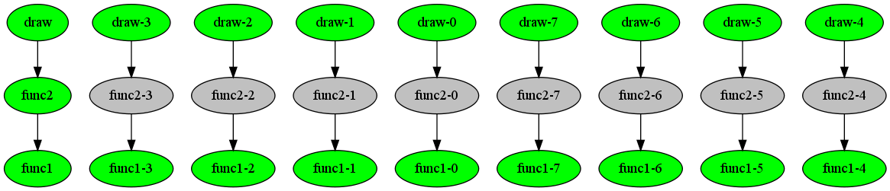

Tutorial¶
Suppose that you have the typical program original.py:
from mycomputations import func1, func2, draw
for param1 in [1, 2, 3]:
for param2 in [10, 11, 12]:
res1 = func1(param1)
res2 = func2(res1, param2)
draw(res2)
(problems)
To use compmake, modify each function call of interest by wrapping it with the comp() function. It’s easy: each fragment of the form:
result = func1(params1)
becomes:
result = comp(func1, params1)
In this example, the source code becomes (file using_compmake.py):
from mycomputations import func1, func2, draw
from compmake import comp
for param1 in [1, 2, 3]:
for param2 in [10, 11, 12]:
res1 = comp(func1, param1)
res2 = comp(func2, res1, param2)
comp(draw, res2)
This is all you have to do to take advantage of compmake. Now, instead of running your program as:
$ python original.py
use the syntax:
$ compmake [MODULE] [COMMAND]
The following are some examples.
Running the computation¶
The command “make [jobs]” runs the computation in series:
$ compmake example make
You can run a specified job by adding it on the command line:
$ compmake example make func1\*
You can also the wildcard * to select multiple jobs.
Diagnostics¶
The command “list” shows a list of the jobs with relative status. If you run
$ compmake example list
before running make, you will see an output similar to this:
draw-0 [2mNot started/False[0m
draw-1 [2mNot started/False[0m
draw-2 [2mNot started/False[0m
draw-3 [2mNot started/False[0m
draw-4 [2mNot started/False[0m
draw-5 [2mNot started/False[0m
[...]
After running make, the output will be:
draw-0 [32mDone/True[0m (1 second ago)
draw-1 [32mDone/True[0m (1 second ago)
draw-2 [32mDone/True[0m (1 second ago)
draw-3 [32mDone/True[0m (1 second ago)
draw-4 [32mDone/True[0m (1 second ago)
draw-5 [32mDone/True[0m (1 second ago)
[...]
Prettier diagnostics¶
There is a command “graph” that can produce a graphical depiction of the computation. (to use this feature, you should have installed graphviz and the gvgen library)
If you run:
$ compmake my_program diagram
before running make you will see the following:

The color grey means that the job has not started. After running make, the output will be:

Here, green means that the job is done.
After we run
Here, green means that the job is done.
The computation gra